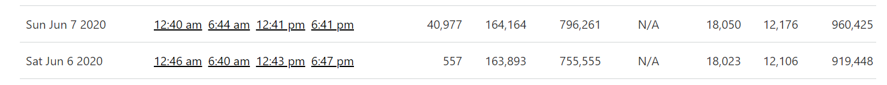
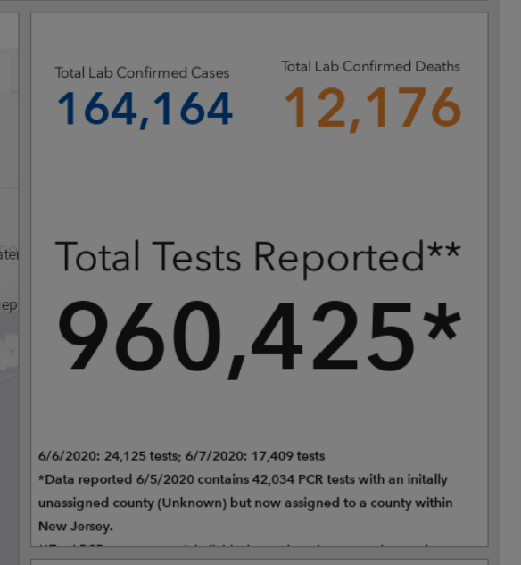
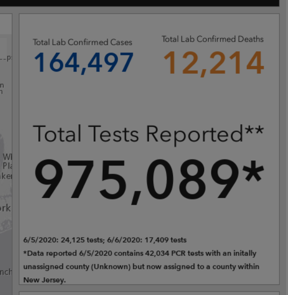
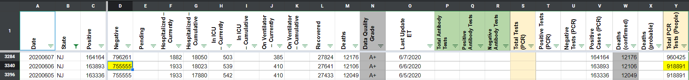

[NJ] Testing Numbers from 6/6-7 Need to be Updated
Issue number 629
the-daniel-lin opened this issue on July 15, 2020 at 9:56 am
Labels Data quality Historical Data not stale
State or US: New Jersey
Describe the problem From an email - "I just wanted to let you guys know that New Jersey updated their testing numbers for June 6 and 7 to break them up. They reported late on the 6th, so you guys rolled their data into the 7th. But they’ve now changed it to 24,125 on the 5th (which you guys report as the 6th) and 17,409 on the 6th (7th for covidtracking.com).
Right now, you guys have 557 and 40,977 for those 2 days."
Link to data source Screenshot showing CTP data:  Screenshot from NJ site on 6/7 shows this breakdown: 
***Note: Screenshots from NJ site from 6/7-22 show a different breakdown: 
However, when summing the two revised values and subtracting our current 6/6 value, we come to our current 6/7 value: 24125 + 17409 - 577 = 40977 Using these revised values for 6/6-7 follows NJ’s testing trends over those few days more consistently. This is also in line with the data lag the email mentions.
BEFORE: 
AFTER:
This issue has been automatically marked as stale because it has not had recent activity. It will be closed if no further activity occurs. Thank you for your contributions!